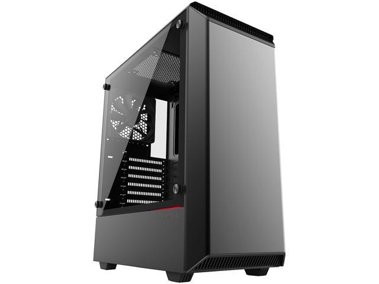
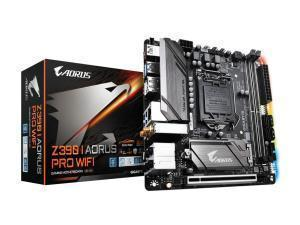
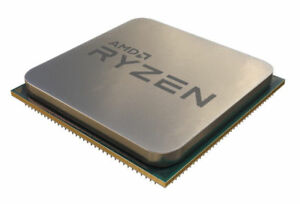
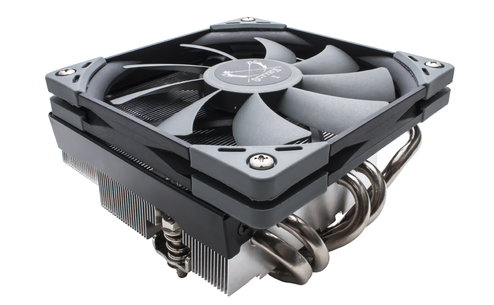
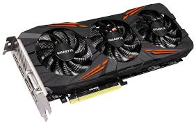
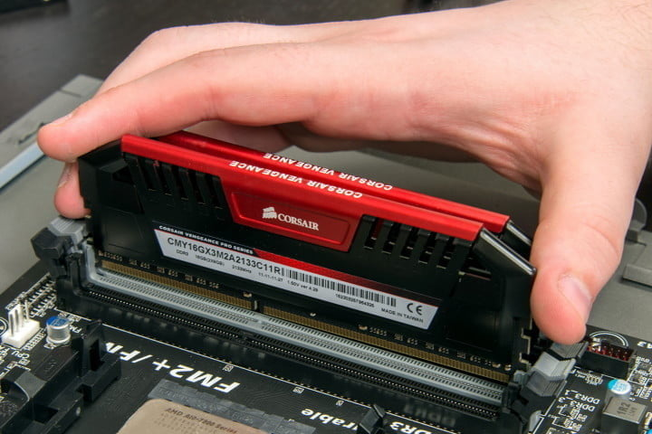
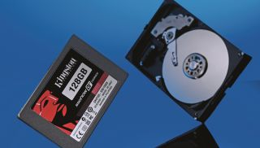

Building a PC requires putting many parts together, on this page we'll simply have a list of the parts you will need to build your pc and a simple description of each one and what they do in the system.
Firstly you need computer case, all the parts you buy need to be housed in something that's how the case works it keeps all the parts safe and altogether for easy transport, you'll never find a PC without the case so you first need to pick one that you like and that is the size you want for the parts you want to put inside it, then maybe any extras like a make or model or say lights that come with it.
Secondly, you'll need the motherboard. The motherboard is like the central hub of the computer it doesn't necessarily do anything but it is a port where you Add all your parts to and allows for every part of the system to communicate with one another without a motherboard there wouldn't be a system as all these parts would be separate and wouldn't be able to work in unison. so, you now have to pick a motherboard with specs that you like and ports for the hardware that you want to put in it for example extra ram ports or anything else. It is important to note that some components may work well together if they’re from the same company such as if every part of your PC was MSI or Nvidia.
We then move on to the processor. In your motherboard you have a specific socket for a processor different motherboard support different processors you must pick a processor that works with your system and one you like that delivers what you want. This part is so crucially important as without the processor the system will not run, nothing will work because the processor is like the brain in your body without your brain no part of your body would work it sends out the instructions and runs all the hardware together and is therefore one of the most important parts of any system you build.
Related with this is the CPU cooler this is normally a fan or cooling tower that stops your CPU reaching a certain heat as if any part of the computer gets too hot they can breakdown or stop working, 9 times out of 10 a CPU cooler will come with a processor but in some cases you might want a specific CPU cooler/heatsink or one that is just better than the stock one you got with your CPU.
next is the graphics card, this oversees calculating anything you have to do with visual outputs of your system, meaning images, user interfaces, games or whatever is displayed on the monitor essentially. This normally comes as a rectangular block that you plug into your motherboard and this is most likely the piece that you will be replacing the most if you use it for things like video editing or gaming. These also normally come self-cooled with fans on them as when they are needed they tend to run hot.
After this comes the RAM, you can think of the ram like temporary thinking storage who reads and writes everything on your computer in terms of storing and running things but this is volatile meaning that when your computer is turned off all this stored data is gone so nothing is actually stored in the ram itself. A simpler way to think about this maybe the amount of things you run at the same time on a computer, for example if I was running 700 word documents and all were automatically saving and reading and writing to my storage device my computer would slow down or even crash because it doesn’t have enough RAM to support it. RAM normally comes in rectangular sticks that you simply stick into your motherboard, they normally come in a set of two for example two 8GB sticks meaning you have 16GB of ram in your system.
You then need to buy storage for your system, most storage comes in 2 different types either HDD or SSD these all do pretty much the same thing, which is storing data on your system, so this is how much storage space you have. The difference between these two types is how they store the data and how they reach it again once it's needed, HDD does tend to have more storage and are easier to use but run a little slower whereas SSD tends to have less storage and can be a bit more expensive but anything that is stored on the SSD is accessed very quickly and can be brought up and used whenever in a fraction of the time compared to an HDD.
Penultimately everything in your system or PC runs on power, obviously, so you will need a power unit for your PC. Each power unit comes with how much wattage it can output and if you diligently go through all the parts in your PC you can work out how much wattage your PC uses so therefore you can buy a power supply that perfectly fits your needs and you can make sure you don't buy one that won't support the parts in your system.

Lastly we have all the extras such as output devices like your monitors or speakers and input devices like keyboards and a mouse, you will also need to put thought into the operating system you want to use which will most likely be Windows 10 as it is the most popular and current. You could also add extras such as a disc reader for your PC or a Wi-Fi card if you aren't going to keep your PC wired these extras are subjective and bases and changes from person to person so you need to think about what parts you need for your pc and how you use it to therefore make an accurate list of the parts you need.
Moreover, you obviously need a decent workspace to build your PC and some tools such as screwdrivers or magnetic plates to store all the small parts of the computer such as small screws when you're building it.